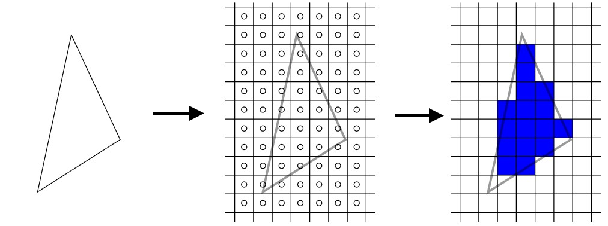
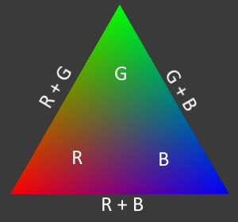
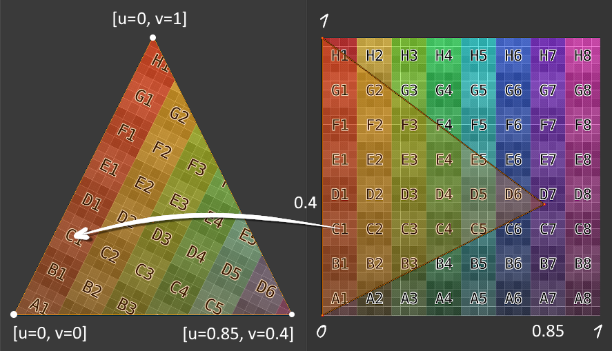
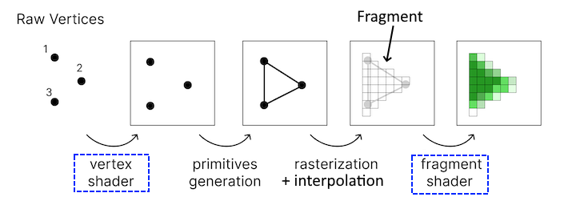

Растеризация и интерполяция
В промежутке между вершинным и пиксельным шейдерами каждый треугольник меша проходит процесс растеризации. Мы не управляем этим процессом, видеокарта делает это автоматически. В процессе растеризации определяется какие именно пиксели на экране будут заняты треугольником.
Кроме того здесь же происходит процесс интерполяции. Интерполяция или интерполирование - это нахождение неизвестных промежуточных значений по известным крайним значениям. Благодаря этому видеокарта, зная значения цветов, нормалей, uv-координат и прочего в каждой из вершин треугольника, может определить эти значения для каждого отдельного пикселя, который входит в этот треугольник. Например если вершины имеют цвета красный, зеленый, синий, то благодаря интерполяции треугольник будет выглядет так:
Видно, как видеокарта интерполировала цвета. Также происходит определение uv-координат в каждой точке треугольника:
Кстати, фрагментом как раз называется треугольник, который прошел процесс растеризации и интерполяции и поступил в пиксельный/фрагментный шейдер. Отсюда и двойное название этого шейдера: он работает с фрагментами, чтобы по итогу превратить их в пиксели на экране.
